<ion-header class="header" style="z-index: 1 !important;" no-border>
  <ion-toolbar style="z-index: 0 !important;" color="medium">
    <ion-buttons>
      <ion-button color="medium">
        <ion-icon slot="icon-only" name="menu"></ion-icon>
      </ion-button>
    </ion-buttons>
    
  </ion-toolbar>
</ion-header>

<ion-content color="medium">
  <ion-item color="medium" class="close-fake" lines="none" text-center>
    <ion-button (click)="close()" fill="clear" color="danger">
      <ion-icon name="close" slot="start"></ion-icon>
      <p style="color: white;"> Regresar </p>
    </ion-button>

    <ion-button (click)="zoom(true)" fill="clear" color="success">
      <ion-icon name="add" slot="start"></ion-icon>
    </ion-button>

    <ion-button (click)="zoom(false)" fill="clear" color="warning">
      <ion-icon name="remove" slot="start"></ion-icon>
    </ion-button>
  </ion-item>

  <ion-slides [options]="sliderOpts" #slider>
    <ion-slide>
      <div class="swiper-zoom-container">
        
      </div>
    </ion-slide>
  </ion-slides>
</ion-content>